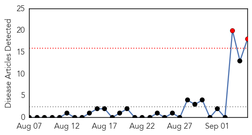
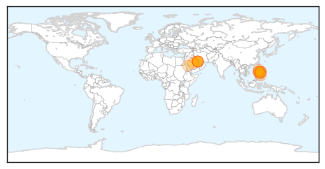

30 Day Trends
Web: 2 alerts, 0 warnings
Twitter: 1 alerts, 0 warnings
Top Articles:
- 0.994
- Nurse, family members set to go home after testing negative for Mers-CoV
- 0.993
- PNP readies hospital isolation rooms for possible Ebola victims–spokesman
- 0.992
- Nurse turns out corona-virus free
- 0.991
- Nurse from KSA didn’t have MERS
- 0.988
- Pinay nurse didn’t have MERS
- 0.987
- Filipino nurse thought to have MERS virus did not
- 0.968
- Filipina nurse thought to have Mers tests negative
- 0.964
- Filipina nurse thought to have Mers tests negative
- 0.955
- PH nurse cleared of MERS-CoV
- 0.944
- Phl still MERS free as nurse tests negative
- 0.938
- (UPDATE) Nurse tested negative for MERS-CoV, says gov't
- 0.936
- Filipina nurse tested negative for MERS-CoV, says Philippine gov't
- 0.916
- Nurse quarantined in Davao for MERS-CoV is released
- 0.915
- 6,570 Moro pilgrims leave for Mecca amid deadly MERS-CoV, Ebola threats
- 0.911
- Filipina nurse from Saudi tests negative for MERS
- 0.851
- Filipina nurse from Saudi Arabia negative for MERS-CoV
- 0.785
- Filipina nurse negative for Mers
- 0.731
- Body of Filipino MERS victim buried
Top Tweets:
-
No tweets found for Sep 05, 2014
Web/News Articles
Tweets

Article Locations
Article Confidences